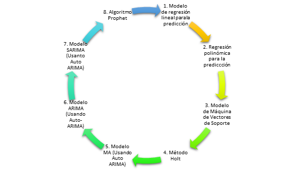

Introducción
La COVID‑19 es una enfermedad infecciosa causada por el coronavirus que se ha descubierto más recientemente. Tanto este nuevo virus como la enfermedad que provoca eran desconocidos antes de que estallara el brote en Wuhan (China) en diciembre de 2019. Actualmente la COVID‑19 es una pandemia que afecta a muchos países de todo el mundo. Esta pandemoa nos ha enseñado que no podemos enfrentar los problemas de igual forma en todos los lugares. En Colombia, desde la llegada del virus en el territorio, se han generado medidas correctivas y preventivas a nivel Nacional y Departamental. A partir de lo anterior, es relevante aplicar tecnicas análiticas que permitan entender el comportamiento del virus y prepararnos para minimizar su impacto.
El virus llegó a los distintos departamentos en fechas diferentes y con efectos diversos. Las regiones que registraron la pandemia con más demora son las mismas cuyo contagio se aceleró durante los meses de mayo y junio. Dentro de las capitales el coronavirus ataca donde existe una densidad poblacional alta, hay pobreza, desempleo, informalidad, delincuencia, microtráfico y deficiencias en los servicios públicos. Claramente el virus se concentra en seis regiones del país, con más del 80% de los casos acumulados. Este fraccionamiento hace que tratar de igual forma las distintas regiones sea perjudicial para la salud y la economía del país.
El análisis de predicción alrededor de este tema a nivel Nacional y departamental motiva para mitigar riesgos y actuar en el momento preciso. El presente trabajo se concentra en las principales ciudades (Bogotá D.C, Medellín, Cartagena, Cali y Barranquilla) con mayor cantidad de casos confirmados en Colombia.
Definición del problema real
A finales de año 2019, en la gran capital de la provincia de Hubei en China denominada Wuhan, empieza un brote de una nueva enfermedad el Coronavirus 2019 (COVID -19), que se convierte en la pandemia a nivel mundial que afecta a un total de 188 países, que corresponde al 97% de los países en el año 2020. Actualmente, el objetivo de todos los científicos del mundo es "Aplanar la curva".
En Colombia, el primer caso positivo de Covid - 19 se presentó el 3 de marzo del 2020 y desde esta fecha su propagación ha aumentado al igual que las medidas preventivas y correctivas. Es por esto que nace la necesidad de pronosticar a corto plazo a nivel departamental el comportamiento de la pandemia con el fin de generar un modelo de predicción para la toma de decisiones con respecto a la expansión del virus.
Definición del problema de analítica
Generar Predicciones y pronósticos de series temporales para estudiar el impacto y la propagación de COVID-19 en el corto plazo para las cinco (5) ciudades principales en Colombia.
Metodología
Datos
Los datos del modelo son obtenidos a partir de la página https://www.datos.gov.co/; esta página tiene disponible archivos CSV diarios que tiene información que es actualizada con las cifras del Covid-19 para Colombia. La información es consumida mediante python.
El conjunto de datos presenta 21 atributos dentro de los cuales los más relevantes para realizar el análisis son: Fecha de Notificación, Ciudad de ubicación, Fecha de muerte, Fecha diagnóstico, Fecha recuperado, Fecha reporte Web y tipo de atención. A partir de la información suministrada por la fuente de datos fue necesario disponer de un algortimo que realiza el conteo numérico acumulado por fecha y por ciudad, de tal manera que permita tener en todas las fechas hasta la actualidad los casos acumulados fallecidos, acumulados confirmados, acumulados recuperados y acumulados activos.
Se consideró trabajar con los acumulados porque permite caracterizar el comportamiento de los datos para las diferentes fechas que se requieren analizar. Es importante tener presente que los expertos coinciden en que el dato de diagnósticos o de fallecidos diarios del balance es menos importante que otros indicadores. Fernando Rodríguez Artalejo, epidemiólogo y director de Medicina Preventiva y Salud Pública de la Universidad Autónoma, señala que seguir las cifras día a día, “puede variar mucho”, “tiene un valor relativo y prácticamente no nos dice nada”, señalando que podría tener más sentido realizar análisis con casos diagnosticados en los últimos 7 días por ejemplo, porque son series mas estables y se pueden comparar con comportamiento de semanas anteriores.
Gestión del ciclo de vida del producto de datos
La fuente de información https://www.datos.gov.co/ identificado por ser un portal de datos abiertos que hacen parte de la información pública y representan un gran potencial para el desarrollo de procesos de Gobierno Abierto (Open Government). Los datos arrojados por esta fuente inicialmente presentan:
- La obtención de resultados reales de reportes.
- El pre-procesamiento de datos publicados antes de la ejecución del modelo.
- El análisis exploratorio de los datos a nivel de Colombia.
- La predicción por semana para cada uno de los casos en las ciudades anteriormente mencionadas.
Metodologías propuestas

Los modelos de series de tiempo contempla un conjunto de modelos enfocados en la relación del tiempo fecha/hora. Para el pronóstico del COVID-19 en Colombia y en las principales ciudades, se contemplaron los siguientes modelos Y a partir del Error Cuadrático Medio -MSE - se seleccionó el más ajustado a los datos del validación.
El modelo seleccionado es el modelo ARIMA que a partir de las variaciones de los datos fue el que más se adaptó en las estimaciones futuras con los datos históricos considerando el MSE y el comportamiento del conjunto de validación.
Objetivo
Generar un modelo de predicción con series temporales para estudiar el impacto y la propagación de COVID-19 a corto plazo en las cinco (5) ciudades principales de Colombia.